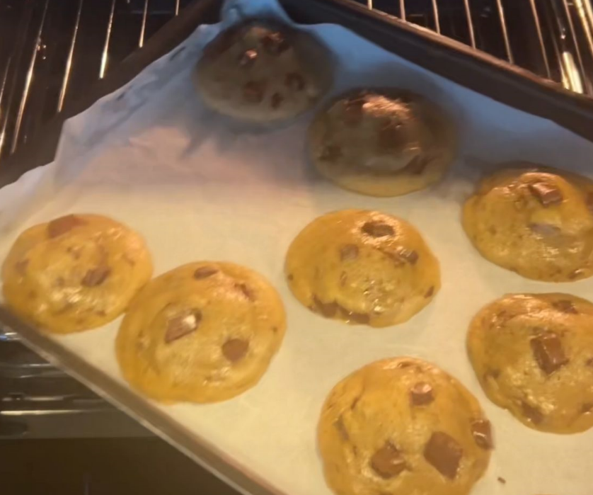

Chocolate Chip Cookies da Sara
Ingredientes
- 3/4 de xícara de manteiga
- 1 xícara de açúcar mascavo
- 1/4 de xícara de açúcar branco
- 1 gema e 1 ovo completo
- 1 colher de sopa de essência de baunilha
- 1 + 3/4 de xícara de farinha
- 1 colher de chá de bicarbonato de sódio
- 1 colher de chá de sal
- gotas de chocolate a olho
Modo de Preparo
- derreter a manteiga em fogo baixo até ela ficar marrom (beurre noisette) e deixar esfriar - colocar a manteiga, o açúcar mascavo e o açúcar branco e misture bem - adicione a gema, o ovo inteiro e a essência de baunilha e misturar - adicionar a farinha (peneirar para ficar mais macio), o bicarbonato e o sal e misturar bem até ficar homogênea. - colocar as gotinhas de chocolate a olho e fazer bolinhas do mesmo tamanho - deixar os cookies já moldados na geladeira por 30 minutos, cobertos com papel alumínio - colocar para assar em uma forma retangular com papel manteiga ou untada com manteiga - dica do Atlas Corrigan: virar os cookies com a metade do cozimento (6min) - deixar assar por 10 a 12 minutos